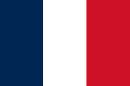

Georgia
Georgia is a country in the Caucasus region on the coast of the Black Sea. It is located at the intersection of Eastern Europe and West Asia, and is today generally regarded as part of Europe. It is bordered to the north and northeast by Russia, to the south by Turkey and Armenia, and to the southeast by Azerbaijan. Georgia covers an area of 69,700 square kilometres (26,900 sq mi). It has a population of 3.9 million, of which over a third live in the capital and largest city, Tbilisi. Ethnic Georgians, who are native to the region, constitute a majority of the country's population and are its titular nation.
learn moreitaly
Italy, officially the Italian Republic, is a country in Southern and Western Europe. It consists of a peninsula that extends into the Mediterranean Sea, with the Alps on its northern land border, as well as nearly 800 islands, notably Sicily and Sardinia. Italy shares land borders with France to the west; Switzerland and Austria to the north; Slovenia to the east; and the two enclaves of Vatican City and San Marino. It is the tenth-largest country in Europe by area, covering 301,340 km2 (116,350 sq mi), and the third-most populous member state of the European Union, with nearly 59 million inhabitants. Italy's capital and largest city is Rome; other major cities include Milan, Naples, Turin, Palermo, Bologna, Florence, Genoa, and Venice.
learn moreGermany
Germany, officially the Federal Republic of Germany, is a country in Western and Central Europe. It lies between the Baltic Sea and the North Sea to the north and the Alps to the south. Its sixteen constituent states have a total population of over 82 million, making it the most populous member state of the European Union. Germany borders Denmark to the north; Poland and the Czech Republic to the east; Austria and Switzerland to the south; and France, Luxembourg, Belgium, and the Netherlands to the west. The nation's capital and most populous city is Berlin and its main financial centre is Frankfurt; the largest urban area is the Ruhr.
learn moreFrance
France, officially the French Republic, is a country primarily located in Western Europe. Its overseas regions and territories include French Guiana in South America, Saint Pierre and Miquelon in the North Atlantic, the French West Indies, and many islands in Oceania and the Indian Ocean, giving it the largest discontiguous exclusive economic zone in the world. Metropolitan France shares borders with Belgium and Luxembourg to the north; Germany to the northeast; Switzerland to the east; Italy and Monaco to the southeast; Andorra and Spain to the south; and a maritime border with the United Kingdom to the northwest. Its metropolitan area extends from the Rhine to the Atlantic Ocean and from the Mediterranean Sea to the English Channel and the North Sea. Its 18 integral regions—five of which are overseas—span a combined area of 632,702 km2 (244,288 sq mi) and have an estimated total population of over 68.6 million as of January 2025. France is a semi-presidential republic. Its capital, largest city and main cultural and economic centre is Paris.
learn moreBelgium
Belgium, officially the Kingdom of Belgium, is a country in Northwestern Europe. Situated in a coastal lowland region known as the Low Countries, it is bordered by the Netherlands to the north, Germany to the east, Luxembourg to the southeast, France to the south, and the North Sea to the west. Belgium covers an area of 30,689 km2 (11,849 sq mi) and has a population of more than 11.8 million; its population density of 383/km2 (990/sq mi) ranks 22nd in the world and sixth in Europe. The capital and largest metropolitan region is Brussels; other major cities are Antwerp, Ghent, Charleroi, Liège, Bruges, Namur, and Leuven.
learn moreArgentina
Argentina, officially the Argentine Republic, is a country in the southern half of South America. It covers an area of 2,780,085 km2, making it the second-largest country in South America after Brazil, the fourth-largest country in the Americas, and the eighth-largest country in the world. Argentina shares the bulk of the Southern Cone with Chile to the west, and is also bordered by Bolivia and Paraguay to the north, Brazil to the northeast, Uruguay and the South Atlantic Ocean to the east, and the Drake Passage to the south. Argentina is a federal state subdivided into twenty-three provinces, and one autonomous city, which is the federal capital and largest city of the nation, Buenos Aires. The provinces and the capital have their own constitutions, but exist under a federal system. Argentina claims sovereignty over the Falkland Islands, South Georgia and the South Sandwich Islands, the Southern Patagonian Ice Field, and a part of Antarctica.
learn moreBrazil
Brazil, officially the Federative Republic of Brazil, is the largest country in South America. It is also the world's fifth-largest country by area and the seventh-largest by population, with over 213 million people. The country is a federation composed of 26 states and a Federal District, which hosts the capital, Brasília. Its most populous city is São Paulo, followed by Rio de Janeiro. Brazil has the most Portuguese speakers in the world and is the only country in the Americas where Portuguese is an official language.
learn morePortugal

Portugal, officially the Portuguese Republic, is a country on the Iberian Peninsula in Southwestern Europe. Featuring the westernmost point in continental Europe, Portugal borders Spain to its north and east, with which it shares the longest uninterrupted border in the European Union; to the south and the west is the North Atlantic Ocean; and to the west and southwest lie the Macaronesian archipelagos of the Azores and Madeira, which are the two autonomous regions of Portugal. Lisbon is the capital and largest city, followed by Porto, which is the only other metropolitan area.
learn moreNigeria
Nigeria, officially the Federal Republic of Nigeria, is a country in West Africa. It is situated between the Sahel to the north and the Gulf of Guinea in the Atlantic Ocean to the south. It covers an area of 923,769 square kilometres (356,669 sq mi). With a population of more than 230 million, it is the most populous country in Africa, and the world's sixth-most populous country. Nigeria borders Niger in the north, Chad in the northeast, Cameroon in the east, and Benin in the west. Nigeria is a federal republic comprising 36 states and the Federal Capital Territory, where its capital, Abuja, is located. The largest city in Nigeria by population is Lagos, one of the largest metropolitan areas in the world and the largest in Africa.
learn moreUnited States
The United States of America (USA), also known as the United States (U.S.) or America, is a country primarily located in North America. It is a federal republic of 50 states and a federal capital district, Washington, D.C. The 48 contiguous states border Canada to the north and Mexico to the south, with the semi-exclave of Alaska in the northwest and the archipelago of Hawaii in the Pacific Ocean. The United States also asserts sovereignty over five major island territories and various uninhabited islands in Oceania and the Caribbean. It is a megadiverse country, with the world's third-largest land area and third-largest population, exceeding 340 million.
learn more